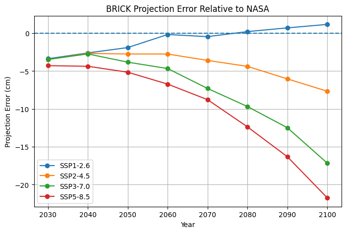
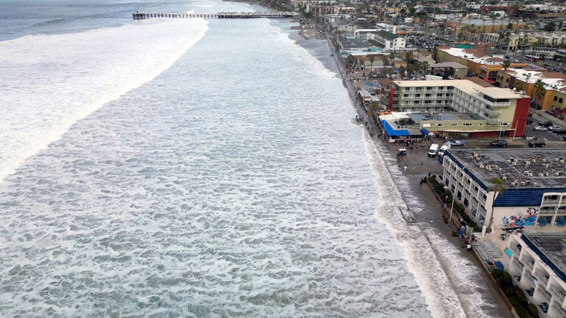
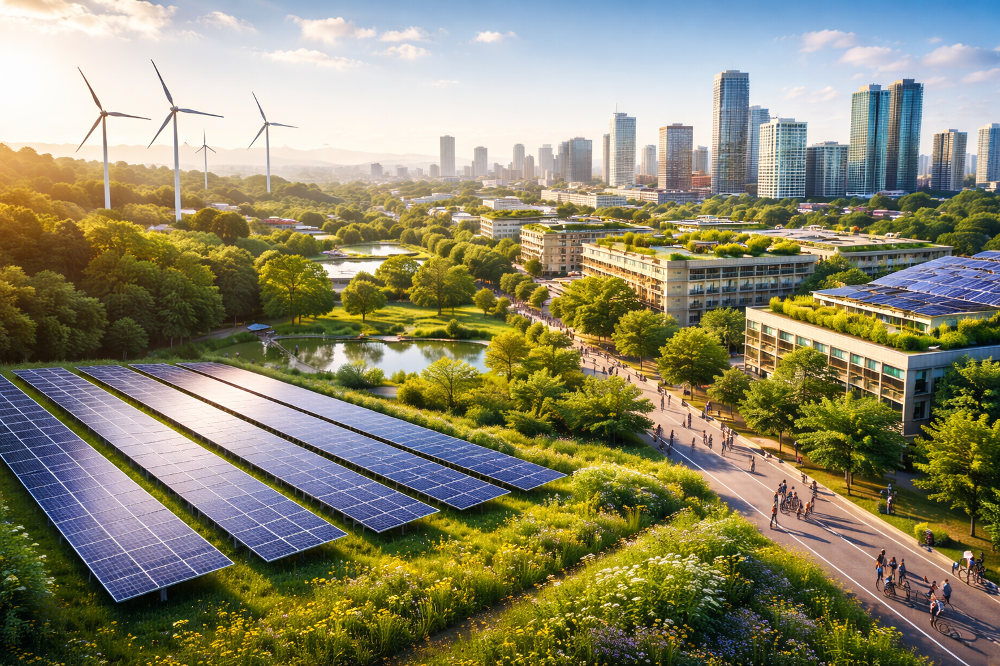

Model evaluation, economic implications of sea level rise, and potential strategies for mitigation and adaptation.
The BRICK model was evaluated against NASA’s decade-by-decade projections for global sea level rise which they obtained from a model from the Intergovernmental Panel for Climate Change. The evaluation metrics used were Mean Bias Error (MBE) and Root-Mean Squared Error (RMSE). While RMSE is a standard metric used to determine overall error size, MBE provides both direction and magnitude of error, thus making it useful to determine if the BRICK model overestimated or underestimated SLR.

Through evaluating the BRICK model against NASA’s SLR projections obtained from the IPCC AR6, it was determined that the BRICK model constantly underestimates SLR. This is particularly the case when emissions are greater, as higher SSPs correlate to a greater difference in SLR estimates. Since all the values for MBE are constantly negative, it means that on a decade-to-decade basis, the values for sea level rise are underestimated in the BRICK model compared to NASA/IPCC’s model. Additionally, the RMSE increases as emissions increase, indicating that the BRICK model is less sensitive to higher emissions and underestimations increase as emissions increase. Overall, the BRICK model underperformed as it under-estimated its predictions for sea level rise and that trend increased for scenarios predicting increased emissions.
There are many stakeholders who will be affected by sea level rise. Three primary groups of stakeholders include policymakers and government officials, populations who live in coastal communites, and financially invested individuals. All these groups will be affected by sea level rise, albiet in different ways.

First, policymakers and government officials will be forced to enact policies to combat sea level rise, whether it be through reducing emissions to try and prevent it as much as possible, investing in protective infrastucture, or relocating populations. Our predictions may give an idea of as to how much sea level rise to expect, so that they do not underestimate and consequently underprepare for the consequences of sea level rise, or, on the other hand, allocate too many resources to the issue.
Next, populations who live in coastal communities are directly impacted by sea level rise. According to a study, roughly 15% of the world's population lives within a few kilometers from the coast. If greenhouse gas emissions continue, these billions of people are at risk of flooding, relocation, and even mortalities. By 2100, sea levels under SSP2-4.5 are expected to rise just over half a meter, which will result in 195 billion dollars in relocation costs. Since our model predicted regional sea level rise, it becomes easier to determine those communities that are at risk and other coastal communities that may be safe.
Finally, financially invested individuals, such as property owners, businessmen, and insurers are at significant risk of incurring economic losses due to sea level rise. For instance, the inevitability of sea level rise may cause the value of coastal infrastructure to go down and the cost of insurance to up in the future. Moreover, when sea level rise does occur, people will lose their homes, businesses will go underwater, and insurance companies will have to pay out claims. As a result, the market will fluctuate and cause economic losses for these financially invested individuals. Our model's predictions of economic damages can help determine where these losses occur and prompt discussions on how to mitigate them while there is time.
Sea level rise is "unavoidable for centuries to millenia"
Regardless of the SSP scenario, sea level rise will impact billions of people and cause trillions of dollars in economic damages. It will cause many major cities and islands to go underwater. This is because sea level rise is an aspect of climate change that has a long term timescale of response, and according to the IPCC, sea level rise is "unavoidable for centuries to millenia". However, this does not mean that the future is set in stone for destruction. The difference between the best and worst-case scenarios for our model show that sea level rise can be reduced by tens of centimeters, and its damages by over fifty trillion dollars. Essentially, there are ways to minimze the impact and consequences sea-level rise will have on the world, however, it will take collective action for those to come to fruition.

While sea level rise is inevitable, there are strategies that can be implemented to minimize it. Although it may seem impossible to combat sea-level rise alone, there are many ways to contribute to the global effort to stop it. These include reducing one's carbon footprint, electing leaders who choose to uptake the issue of climate change, and spreading the word about the issue to bring about a community effort.
According to nature.org, a carbon footprint is the “total amount of greenhouse gases that are generated by [one's] actions”. Greenhouse gases contribute to anthropogenic climate change, so reducing one's carbon footprint will effectively contribute to minimizing sea-level rise.
Voting for government officials that support the initiative for climate change and wish to follow the Paris Climate Agreement can help! The Paris Climate Agreement of 2015 was signed by almost all countries to reduce global warming to 2°C below pre-industrial levels.
Many people do not know about the issue of sea level rise! Spreading the word can help to take collective action and push for a greater effort to counter it.
Since the industrial revolution, humans have released greenhouse gases that are contributing to global warming. These increase the temperature of the Earth, causing sea level rise, hurting humans rather than benefitting them. Following these suggested actions will help contrbute to forming a sustainable world where coastal communites and future generations can thrive instead of being burdened by the mistakes of our generation.